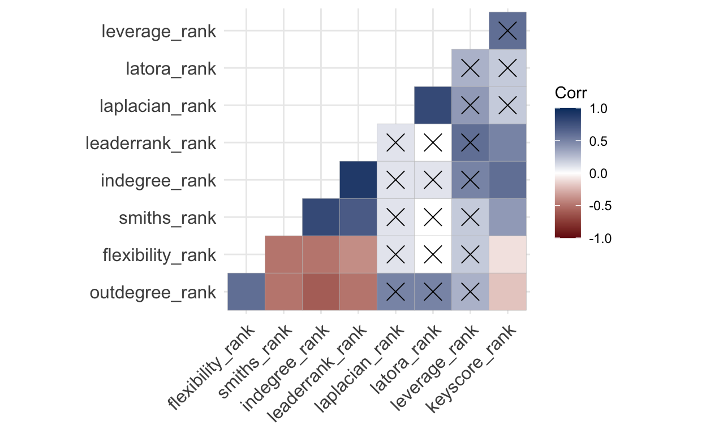

Introduction
A social network analysis of a small network that is involved in the Collaborative for Equitable and Inclusive STEM Learning (CEISL) Family as Faculty as an Infrastructure project at the Indiana University School of Education-Indianapolis. Funded in part by a National Association for Family, School, and Community Engagement Mini-Grant.
We are exploring the following questions through a social network analysis:
- What intentional social networks form through an effort between pre-admissions teacher education students, Neighborhood Caucus members, and Family Leaders through a Family as Faculty initiative focused on educational justice?
- Considering the social network as a model, what dynamics can be uncovered that provide insight into the ways in which connections and relationships are built through a Family as Faculty initiative focused on educational justice?
- Understanding the unruly complexity of educational justice work and the networks that emerge, what historical and social impacts can be brought forward to illuminate and deepen our understanding of how dynamic social networks operate while focusing on educational justice?
The term intentional social networks comes from the work of Kira Baker-Doyle that demonstrates how educators strategically reach out and construct networks around their work (Baker-Doyle 2012; Baker-Doyle and Yoon 2020). Unruly complexity comes from the work of Peter Taylor through his critique of models and his efforts to re-situate model-based research in historical and sociocultural contexts (Taylor 2010, 2018).
Components
All components of this work can be found at the project’s OSF repository.
File Structure
fafi-sna/
┣ aux/ <- Directory for storing auxiliary files
┃ ┗ fafi-sna-references.bib <- Bibliography for this project in BibTeX format
┃ ┗ theme.css <- Cascading style sheet for the project
┃ ┗ fafi-sna-logo.png <- Project logo
┃ ┗ credit.xml <- Author contributions in a JATS XML file
┣ docs/ <- Directory for the rendered literate programming file
┃ ┗ index.html <- Rendered version of the literate programming file
┣ index_cache/ <- Directory used to serve the rendered literate programming file
┣ index_files/ <- Directory used to serve the rendered literate programming file
┣ output/ <- Target directory for collecting R output files
┃ ┗ plots/ <- Directory for storing plots in PDF and PNG formats
┃ ┗ csv/ <- Directory for storing CSV files
┣ R <- Directory for storing R scripts
┃ ┗ fafi-sna.R <- R script distilled from the literate programming file
┣ .gitignore <- Files and directories to be ignored by Git
┣ .nojekyll <- File to tell Github to not use Jekyll
┣ _footer.html <- The footer for the rendered literate programming file
┣ _site.yml <- Configuration file for the rendered literate programming file
┣ CODE_OF_CONDUCT.md <- Code of Conduct for project contributors
┣ LICENSE <- License (MIT) for project
┣ README.md <- This file, a general overview of this project
┗ index.Rmd <- Literate programming file for the project analysisLiterate Code
Computer scientist Don Knuth (1984) first coined the term “literate programming” to describe a form of programming that is created as a human-readable narrative. It has been taken up as a format that is rich in comments and documentation to illustrate and illuminate the choices and decisions that were made in the act of programming. Literate code is also an essential aspect of research to promote reproducibility of analysis (Dekker 2018; Vassilev et al. 2016). In this case, as a community-engaged study, we are more interested in exemplifying trust, transparency, and accountability (Chou and Frazier 2020; Mullins et al. 2020; Sabatello et al. 2022), literate code provides a clear window for community members and participants into the inner processes of data analysis and visualization methodologies.
This is primarily an exercise in coding as bricolage (Lévi-Strauss 1968; Turkle and Papert 1992), so the code itself is neither particularly DRY nor SLAP. But it works and gets the job done even if there may be more elegant and efficient ways of doing things.
Load Libraries
Libraries are packages that are loaded in to extend the functionality to the base R programming language. This project makes use of three different categories of libraries: Network Graph Libraries, a Quantitative Anthropology Library, and Other R Libraries.
Network Graph Libraries
Network Graph Libraries allow for the construction, analysis, and visualization of
social network data. The igraph library (Csardi and Nepusz 2006) is the main social network
analysis engine, while tidygraph (Pedersen 2023) and ggraph (Pedersen 2022)
provide functionality for processing and visualizing social network graphs, respectively.
Centiserve (Jalili 2017) provides extended centrality algorithms.
Quantitative Anthropology Library
Since participants are asked for names and roles, the data collection process is
essentially a freelisting protocol (Quinlan 2018). Under that
assumption, Smith’s Salience (S) Score can be calculated. AnthroTools (Purzycki and Jamieson-Lane 2017)
provides functionality for working with freelist data and calculating Smith’s S.
library(AnthroTools)Other R Libraries
The other libraries utilized for this analysis provide extensions for base R in
working with data. The readr package (Wickham, Hester, and Bryan 2023) allows for efficient and
straightforward reading and writing of local CSV files,
while the rio (Chan et al. 2021) package allows for the reading of web-based CSV files as the datasets for this project are stored in an OSF repository. The glue (Hester and Bryan 2022), tidyr (Wickham, Vaughan, and Girlich 2023), and dplyr (Wickham et al. 2023)
packages are used to process data. The ggthemes package (Arnold 2021)
provides extended theme options for graphs, vistime (Raabe 2022) provides functionality
for creating timelines, ggcorrplot (Kassambara 2022) provides functionality for
creating correlation plots, and ggpubr (Kassambara 2023) provides functionality for creating
publication-ready plots and graphs.
Define Constants
The following constants are utilized across the project.
Common Color Pallete
The IBM Carbon Design System color pallete, a large
color-blind friendly data-oriented color palette, is used to represent various types of
participants. the.palette links these participant types with color codes.
the.palette <<- c(
"FL" = "#6929c4", "NC" = "#1192e8", "PA" = "#005d5d",
"CF" = "#9f1853", "FF" = "#fa4d56", "IL" = "#570408",
"OR" = "#198038", "OT" = "#002d9c", "SA" = "#ee538b",
"ST" = "#b28600", "UA" = "#009d9a", "UF" = "#012749",
"US" = "#8a3800"
)Participant Abbreviation List
Relatedly, the.abbrev dataframe provides links between the abbreviations for the
participant types and the full descriptions of these participant types.
the.abbrev <<- data.frame(
color_code = c(
"FL", "NC", "FF", "IL", "OR", "OT", "SA",
"ST", "UA", "UF", "US", "PA", "CF"
),
full = c(
"Family Leader", "NC Member", "Friend/Family",
"Institutional Leader", "Other Resource", "Therapist",
"Administrator", "Teacher", "Advisor", "Faculty",
"Staff", "Student", "Child"
)
)Define Functions
Functions provide “shortcodes” for repeating calculations or analyses multiple times with different variables, datasets, or networks.
Helper Functions
Helper functions provide functionality to other functions or ongoing analysis and calculations across the code.
Save Plots Function
This function saves plots to the output folder in two formats,
as a pdf file and as a png. These two formats serve different purposes, so both are useful:
pdf files are useful for inclusion in publications and png files are useful for distribution
via the web. Both files are set at a high resolution 300dpi.
plot.save <- function(the.plot, the.file) {
# Set the filename for the PDF.
pdf.name <- glue("output/plots/{the.file}.pdf")
# Set the filname for the PNG.
png.name <- glue("output/plots/{the.file}.png")
# Save as PDF.
ggsave(the.plot, filename = pdf.name, width = 11.5, height = 8, units = "in", dpi = 300)
# Save as PNG.
ggsave(the.plot, filename = png.name, width = 11.5, height = 8, units = "in", dpi = 300)
}Create Correlation Plot Function
Correlation plots are effective modes of visualizing relationships between variables. This function takes in a dataframe and creates and saves a correlation plot while identifying (with an X) correlations that are not statistically significant (i.e., the \(p\)-value for non-significant correlations is greater than 0.05).
plot.corr <- function(the.frame, the.file) {
# Calculate the correlation of the provided dataframe.
corr <- round(cor(the.frame), 1)
# Calculate a matrix of significance.
p.mat <- cor_pmat(corr)
# Initialize plot.
corr.plot <- ggcorrplot(corr,
hc.order = TRUE, # Order according to hierarchical clustering.
type = "lower", # Only display the bottom half.
p.mat = p.mat, # Account for statistical significance.
colors = c("#750e13", "#ffffff", "#003a6d")
) # Set colors.
# Save the plot...
plot.save(corr.plot, the.file)
# ...and return it.
return(corr.plot)
}Calculate Tukey’s Fences Function
Small graphs are prone to extreme outliers, especially when there are power dynamics such as instructor-student relations. While acknowledging this dynamic, it does skew such calculations as a Key Actor Analysis. Tukey’s fences (Hoaglin, Iglewicz, and Tukey 1986; Tukey 1993) is one way to remove the impact of these outliers.
calculate.tukey <- function(the.cent) {
# Calculate Tukey's fences
q <- quantile(the.cent, c(0.25, 0.75))
iqr <- q[2] - q[1]
the.fence <- data.frame(
lower = q[1] - 1.5 * iqr,
upper = q[2] + 1.5 * iqr
)
return(the.fence)
}Network Graph Functions
Initialize Network Graph Function
The set.graph function takes in an edge list that
provides a representation of who participants named in the survey and converts it into a
network graph object. Extra variables are added to the graph:
weight, which is the number of times \(i\) (the participant) names \(j\) on the survey, which is used to weight the relationships between actors.color_code, which is just the first two letters of actor id that allows reference to the color palette to set the color of the node when the graph is plotted.size_code, which is the Smith’s Salience Score for \(j\) (multiplied by 100) to set the size of the node when the graph is plotted.label, which is the abbreviation expanded with the ID number for easier reading when the graph is plotted.
The graph and these variables are passed on for plotting and calculating centralities. Several
of the centrality algorithms account for weight when calculating the centrality.
set.graph <- function(the.frame, the.salience) {
# Reduce the edge list to just i (from) and j (to).
the.frame <- the.frame |>
select("from", "to")
# Calculate the number of times i names j.
the.weight <- the.frame |>
group_by(from, to) |>
summarize(weight = n()) |>
ungroup()
# Combine the dataframes into one, matching the weight to the edge.
the.frame <- merge(the.frame, the.weight, by = c("from", "to"))
# Create the igraph object, and set it to be a directed graph (i.e., i -> j).
the.graph <- the.frame |>
graph_from_data_frame(directed = TRUE)
the.salience <- the.salience |> rename("name" = "actor")
node.data <- data.frame(name = V(the.graph)$name) |>
mutate(id_no = substr(V(the.graph)$name, 3, 4)) |>
mutate(color_code = substr(V(the.graph)$name, 1, 2)) |>
left_join(the.salience) |>
left_join(the.abbrev) |>
mutate(label = glue("{full} {id_no}")) |>
replace_na(list(SmithsS = 0.01))
V(the.graph)$color_code <- node.data$color_code
V(the.graph)$size_code <- (node.data$SmithsS) * 100
V(the.graph)$label <- node.data$label
# Send the graph object back for further processing.
return(the.graph)
}Plot the Graph Function
The draw.graph creates the visualization–the plot–of the
social network graph and then saves it for further use. The geom_edge_fan feature is used
to represent the number of times a participant named an actor.
draw.graph <- function(the.graph, the.file) {
# Set the filename for saving the graph.
the.file <- glue("sna_{the.file}-plot")
# Set a reproducible seed for randomization, used to ensure that the plot looks more or less
# the same each time it is created.
set.seed(123)
# Create the plot.
the.plot <- the.graph |>
ggraph(layout = "fr") + # Display the graph using the Fruchterman and Reingold algorithm.
geom_edge_fan(color = "#A7A9AB") + # Plot the edges between nodes.
geom_node_point(
aes(
color = color_code, # Plot the nodes with the color determined by the
linewidth = size_code
), # participant and the size of the node determined
show.legend = FALSE
) + # by the Smith's S Salience Score.
scale_size_continuous(range = c(2.5, 10)) + # Rescale the node size.
scale_color_manual(values = the.palette) + # Bring in the color palette.
geom_node_text(aes(label = label), repel = TRUE) + # Place the actor name on the graph.
labs(edge_width = "Letters") +
theme_graph() # Set the theme to social network graph which removes all extraneous grids.
# Save the plot.
plot.save(the.plot, the.file)
# Return the plot for further use as necessary.
return(the.plot)
}Calculate Network Centralities Function
A number of node-level centralities, or metrics, are calculated on the graphs and are utilized for the analysis. Nodes are the graphical representation of actors and edges are the graphical representation of relationships between actors.
- Degree (In) Centrality. The number of incoming edges from other actors (Borgatti and Brass 2019; Everett and Borgatti 1999).
- Degree (Out) Centrality. The number of outgoing edges to other actors (Borgatti and Brass 2019; Everett and Borgatti 1999).
- Laplacian Centrality. The “what will happen when I’m gone” centrality, an indication of how indispensible an actor is based on the structural resilience of the network and how the network can “fill in” if a node is removed (Qi et al. 2012).
- Latora Closeness Centrality. A measure of efficiency of network graphs, particularly small and potentially disconnected graphs, indicating how efficiently information moves through the actor and across the network (Latora and Marchiori 2001).
- Leader Rank Centrality. A measure of influence, identifying actors who facilitate the rapid and wide spread of information across the network, an algorithm developed specifically for social networks rather than similar algorithms designed for web pages (Lü et al. 2011).
- Leverage Centrality. A measure of how “in the thick of it” an actor is, based on who they are connected to and who those actors are connected to, while accounting for parallel, not just serial, flows of information (Joyce et al. 2010).
calculate.centrality <- function(the.graph, the.salience, the.file) {
analysis.network.data <- data.frame(
indegree = igraph::degree(the.graph, mode = "in"),
outdegree = igraph::degree(the.graph, mode = "out"),
leaderrank = leaderrank(the.graph),
laplace = laplacian(the.graph),
leverage = leverage(the.graph),
latora = closeness.latora(the.graph)
)
analysis.network.data$actor <- rownames(analysis.network.data)
rownames(analysis.network.data) <- NULL
analysis.network.data <- analysis.network.data |>
select(actor, everything()) |>
left_join(the.salience) |>
replace_na(list(SmithsS = 0))
rownames(analysis.network.data) <- analysis.network.data$actor
return(analysis.network.data)
}Calculate Named Actors Salience Scores Function
calculate.salience <- function(the.frame, the.grouping, the.file) {
the.filename <- glue("output/csv/salience_{the.file}.csv")
anthro.frame <- the.frame |>
select("Subj" = "from", "Order" = "order", "CODE" = "to", "GROUPING" = "question") |>
add_count(Subj, GROUPING) |>
filter(n > 1)
if (the.grouping == "none") {
anthro.frame <- anthro.frame |>
select("Subj", "Order", "CODE") |>
distinct() |>
as.data.frame()
anthro.frame$Order <- as.numeric(anthro.frame$Order)
the.salience <- CalculateSalience(anthro.frame)
} else {
anthro.frame <- anthro.frame |>
select("Subj", "Order", "CODE", "GROUPING") |>
distinct() |>
as.data.frame()
anthro.frame$Order <- as.numeric(anthro.frame$Order)
the.salience <- CalculateSalience(anthro.frame, GROUPING = "GROUPING")
}
code.salience <- SalienceByCode(the.salience, dealWithDoubles = "MAX")
write_csv(code.salience, the.filename, append = FALSE)
code.salience <- code.salience |>
select("actor" = "CODE", "SmithsS")
return(code.salience)
}Key Actor Functions
Identify Key Actors Function
calculate.keyactors <- function(the.frame, the.file) {
max_leverage <- max(the.frame$leverage, na.rm = TRUE)
min_leverage <- min(the.frame$leverage, na.rm = TRUE)
key.frame <- the.frame %>%
select(actor, leverage, leaderrank, SmithsS)
key.res <- lm(leaderrank ~ leverage, data = key.frame)$residuals |>
as.data.frame() |>
rename(res = 1) |>
mutate(res = abs(res))
key.res$actor <- row.names(key.res)
row.names(key.res) <- NULL
key.frame <- key.frame |>
left_join(key.res)
leaderrank.fence <- calculate.tukey(key.frame$leaderrank)
key.frame.leaderrank.trimmed <- key.frame |>
filter(leaderrank >= leaderrank.fence$lower & leaderrank <= leaderrank.fence$upper)
leverage.fence <- calculate.tukey(key.frame$leverage)
key.frame.leverage.trimmed <- key.frame |>
filter(leverage >= leverage.fence$lower & leverage.fence$upper)
key.ymean <<- mean(key.frame.leaderrank.trimmed$leaderrank)
key.xmean <<- mean(key.frame.leverage.trimmed$leverage)
key.frame <- key.frame |>
mutate(keystatus = case_when(
(leaderrank > key.ymean & leverage > key.xmean) ~ "Sage",
(leaderrank > key.ymean & leverage < key.xmean) ~ "Steward",
(leaderrank < key.ymean & leverage > key.xmean) ~ "Weaver"
)) |>
na.omit() |>
group_by(keystatus) |>
arrange(desc(res), desc(SmithsS)) |>
unique() |>
ungroup()
key.frame <- key.frame |>
select(actor, leverage, leaderrank, res, SmithsS, keystatus) |>
arrange(keystatus, desc(res), desc(SmithsS))
return(key.frame)
}Plot Key Actors Function
plot.keyactors <- function(key.frame, the.file) {
the.filename <- glue("keyactors_{the.file}-plot")
key.xmin <- min(key.frame$leverage)
key.xmax <- max(key.frame$leverage)
key.ymin <- min(key.frame$leaderrank)
key.ymax <- max(key.frame$leaderrank)
steward.count <- count.keyactors(key.frame, "Steward")
sage.count <- count.keyactors(key.frame, "Sage")
weaver.count <- count.keyactors(key.frame, "Weaver")
key.frame <- key.frame |>
mutate(color_code = substr(key.frame$actor, 1, 2)) |>
mutate(id_no = substr(key.frame$actor, 3, 4)) |>
left_join(the.abbrev) |>
mutate(label = glue("{full} {id_no}")) |>
select(-full, -id_no)
key.plot <- ggscatter(key.frame,
x = "leverage", y = "leaderrank",
label = "label", label.rectangle = FALSE, repel = TRUE,
theme = theme_minimal(), ylab = "Leader Rank Centrality",
xlab = "Leverage Centrality", point = TRUE, show.legend = FALSE,
color = "color_code", palette = the.palette,
conf.int = FALSE, cor.coef = FALSE, legend = "none"
)
if (steward.count != 0) {
key.plot <- key.plot +
geom_vline(xintercept = key.xmean, color = "#243142", alpha = 0.2) +
geom_label(aes(x = key.xmin, y = key.ymax, label = "Stewards", hjust = 0),
color = "#243142", fill = "#A7A9AB"
)
}
if (weaver.count != 0) {
key.plot <- key.plot +
geom_hline(yintercept = key.ymean, color = "#243142", alpha = 0.2) +
geom_label(aes(
x = key.xmax, y = key.ymin,
label = "Weavers", hjust = 1
), color = "#243142", fill = "#A7A9AB")
}
key.plot <- key.plot +
geom_label(aes(
x = key.xmax, y = key.ymax,
label = "Sages", hjust = 1
), color = "#243142", fill = "#A7A9AB") +
theme_few() +
theme(legend.position = "none")
plot.save(key.plot, the.filename)
return(key.plot)
}Count Key Actors Function
count.keyactors <- function(key.frame, the.actor) {
the.count <- key.frame |>
count(keystatus) |>
filter(keystatus == the.actor) |>
pull(n)
the.count <- ifelse(is.numeric(the.count), the.count, 0)
the.count <- the.count |> replace_na(0)
return(the.count)
}Process Key Actor Data Functions
Deeper Analysis Functions
Combine Multiplex Graph Layers Functions
create.q.cent <- function(the.1, the.2, the.question) {
the.q.cent <- bind_rows(the.1, the.2) |>
mutate(question = the.question) |>
select(
question, actor, outdegree, indegree, leverage,
laplace, leaderrank, latora, SmithsS
)
}
calculate.ranks <- function(the.cent) {
the.cent <- the.cent |>
mutate(outdegree_rank = dense_rank(desc(outdegree))) |>
mutate(indegree_rank = dense_rank(desc(indegree))) |>
mutate(leverage_rank = dense_rank(desc(leverage))) |>
mutate(laplacian_rank = dense_rank(desc(laplace))) |>
mutate(leaderrank_rank = dense_rank(desc(leaderrank))) |>
mutate(smiths_rank = dense_rank(desc(SmithsS))) |>
mutate(latora_rank = dense_rank(desc(latora))) |>
select(
question, actor, outdegree, outdegree_rank, indegree, indegree_rank,
leverage, leverage_rank, laplace, laplacian_rank,
latora, latora_rank, leaderrank, leaderrank_rank, SmithsS, smiths_rank
) |>
arrange(question, actor)
rownames(the.cent) <- NULL
return(the.cent)
}Calculate Node Flexibility Functions
Calculate Jaccard Coefficient Function
Calculate Node Flexibility Function
calculate.node.flexibility <- function(the.actor) {
set1 <- flex.frame |>
filter(actor == the.actor & question == "Q1") |>
select(actor, to) |>
as.data.frame()
set1$actor <- as.factor(set1$actor)
set1$to <- as.factor(set1$to)
set2 <- flex.frame |>
filter(actor == the.actor & question == "Q3") |>
select(actor, to) |>
as.data.frame()
set2$actor <- as.factor(set2$actor)
set2$to <- as.factor(set2$to)
set3 <- flex.frame |>
filter(actor == the.actor & question == "Q4") |>
select(actor, to) |>
as.data.frame()
set3$actor <- as.factor(set3$actor)
set3$to <- as.factor(set3$to)
jaccard.1 <- calculate.jaccard(set1, set2)
jaccard.2 <- calculate.jaccard(set2, set3)
jaccard.3 <- calculate.jaccard(set1, set3)
# the.flexibility <- 1 - ((1 / (3 * (3 - 1)) * (jaccard.1 + jaccard.2 + jaccard.3)) / 3)
the.flexibility <- 1 - ((jaccard.1 + jaccard.2 + jaccard.3) / 3)
response.frame <- data.frame(actor = the.actor, flexibility = the.flexibility)
return(response.frame)
}Processing The Data
Reading the Data
pates.frame <- import("https://osf.io/download/62qpa/", format = "csv") |>
mutate_all(toupper) |>
filter(id != "PA09") |>
pivot_longer(
cols = starts_with("Q"),
names_to = "question",
values_to = "to"
) |>
drop_na() |>
select("question", "from" = "id", "to") |>
separate(col = question, into = c("question", "order"), sep = "_") |>
filter(to != "")
ncfl.frame <- import("https://osf.io/download/ghz3c/", format = "csv") |>
mutate_all(toupper) |>
pivot_longer(
cols = starts_with("Q"),
names_to = "question",
values_to = "to"
) |>
drop_na() |>
select("question", "from" = "ID", "to") |>
separate(col = question, into = c("question", "order"), sep = "_") |>
filter(to != "")
full.frame <- rbind(pates.frame, ncfl.frame)Create Overall Graph
full.salience <- calculate.salience(full.frame, "GROUPING", "full")
full.graph <- set.graph(full.frame, full.salience)
full.plot <- draw.graph(full.graph, "full")Process Questions
pates.q1.frame <- pates.frame |>
filter(question == "Q1")
pates.q1.salience <- calculate.salience(pates.q1.frame, "GROUPING", "Q1")
pates.q1.graph <- set.graph(pates.q1.frame, pates.q1.salience)
pates.q1.plot <- draw.graph(pates.q1.graph, "q1_pates")
pates.q1.cent <- calculate.centrality(pates.q1.graph, pates.q1.salience, "q1_pates")
pates.q1.key <- calculate.keyactors(pates.q1.cent, "q1_pates")
pates.q1.key.plot <- plot.keyactors(pates.q1.key, "q1_pates")
ncfl.q1.frame <- ncfl.frame |>
filter(question == "Q1")
ncfl.q1.salience <- calculate.salience(ncfl.q1.frame, "GROUPING", "Q1")
ncfl.q1.graph <- set.graph(ncfl.q1.frame, ncfl.q1.salience)
ncfl.q1.plot <- draw.graph(ncfl.q1.graph, "q1_ncfl")
ncfl.q1.cent <- calculate.centrality(ncfl.q1.graph, ncfl.q1.salience, "q1_ncfl")
ncfl.q1.key <- calculate.keyactors(ncfl.q1.cent, "q1_ncfl")
ncfl.q1.key.plot <- plot.keyactors(ncfl.q1.key, "q1_ncfl")
pates.q3.frame <- pates.frame |>
filter(question == "Q3")
pates.q3.salience <- calculate.salience(pates.q3.frame, "GROUPING", "Q3")
pates.q3.graph <- set.graph(pates.q3.frame, pates.q3.salience)
pates.q3.plot <- draw.graph(pates.q3.graph, "q3_pates")
pates.q3.cent <- calculate.centrality(pates.q3.graph, pates.q3.salience, "q3_pates")
pates.q3.key <- calculate.keyactors(pates.q3.cent, "q3_pates")
pates.q3.key.plot <- plot.keyactors(pates.q3.key, "q3_pates")
ncfl.q3.frame <- ncfl.frame |>
filter(question == "Q3")
ncfl.q3.salience <- calculate.salience(ncfl.q3.frame, "GROUPING", "Q3")
ncfl.q3.graph <- set.graph(ncfl.q3.frame, ncfl.q3.salience)
ncfl.q3.plot <- draw.graph(ncfl.q3.graph, "q3_ncfl")
ncfl.q3.cent <- calculate.centrality(ncfl.q3.graph, ncfl.q3.salience, "q3_ncfl")
ncfl.q3.key <- calculate.keyactors(ncfl.q3.cent, "q3_ncfl")
ncfl.q3.key.plot <- plot.keyactors(ncfl.q3.key, "q3_ncfl")
pates.q4.frame <- pates.frame |>
filter(question == "Q4")
pates.q4.salience <- calculate.salience(pates.q4.frame, "GROUPING", "Q4")
pates.q4.graph <- set.graph(pates.q4.frame, pates.q4.salience)
pates.q4.plot <- draw.graph(pates.q4.graph, "q4_pates")
pates.q4.cent <- calculate.centrality(pates.q4.graph, pates.q4.salience, "q4_pates")
pates.q4.key <- calculate.keyactors(pates.q4.cent, "q4_pates")
pates.q4.key.plot <- plot.keyactors(pates.q4.key, "q4_pates")
ncfl.q4.frame <- ncfl.frame |>
filter(question == "Q4")
ncfl.q4.salience <- calculate.salience(ncfl.q4.frame, "GROUPING", "Q4")
ncfl.q4.graph <- set.graph(ncfl.q4.frame, ncfl.q4.salience)
ncfl.q4.plot <- draw.graph(ncfl.q4.graph, "q4_ncfl")
ncfl.q4.cent <- calculate.centrality(ncfl.q4.graph, ncfl.q4.salience, "q4_ncfl")
ncfl.q4.key <- calculate.keyactors(ncfl.q4.cent, "q4_ncfl")
ncfl.q4.key.plot <- plot.keyactors(ncfl.q4.key, "q4_ncfl")Analyzing the Data
Preparing the Scores
Calculate Actor Flexibility Score
\(F_i = \frac{\frac{1}{m(m-1)} \sum_{p\neq q} J(set_p^i,\ set_q^i)}{\max_{p,q} J(set_p,\ set_q)}\)
Where \(i\) represents a given actor, \(m\) is the total number of sets, \(p\) and \(q\) are indices representing the set of sets, and \(J\) represents the Jaccard Coefficient.
Calculate Key Actor Score
q1.key <- create.q.key(pates.q1.key, ncfl.q1.key, "q1")
q3.key <- create.q.key(pates.q3.key, ncfl.q3.key, "q3")
q4.key <- create.q.key(pates.q4.key, ncfl.q4.key, "q4")
q.key <<- bind_rows(q1.key, q3.key, q4.key) |>
select(actor, keystatus) |>
mutate(keyscore = case_when(
keystatus == "Sage" ~ 3,
keystatus == "Steward" ~ 2,
keystatus == "Weaver" ~ 1
)) |>
group_by(actor) |>
summarize(keyscore = sum(keyscore)) |>
mutate(keyscore = keyscore / 9)Create Rankings for Comparing Across Graphs
Because this is a multilayered graph that includes information across a range of contexts in response to different prompts, the calculated centralities themselves cannot be compared because this is like comparing a golden delicious to a honey crisp apple. Instead, relative ranks can be compared across the multiple layers of the graphs: how did actor \(i\) rank compare to the others? This ranking provides a picture across contexts and prompts.
Blah blah blah.
q1.cent <- create.q.cent(pates.q1.cent, ncfl.q1.cent, "q1") |>
calculate.ranks()
q3.cent <- create.q.cent(pates.q3.cent, ncfl.q3.cent, "q3") |>
calculate.ranks()
q4.cent <- create.q.cent(pates.q4.cent, ncfl.q4.cent, "q4") |>
calculate.ranks()
q.cent <<- bind_rows(q1.cent, q3.cent, q4.cent)full.avg.cent <- q.cent |>
select(
actor, leverage_rank, laplacian_rank, outdegree_rank, indegree_rank,
latora_rank, leaderrank_rank, smiths_rank
) |>
group_by(actor) |>
summarize(across(everything(), mean), .groups = "drop") |>
left_join(flex.score) |>
left_join(q.key) |>
replace_na(list(flexibility = 0, keyscore = 0)) |>
mutate(flexibility_rank = dense_rank(desc(flexibility))) |>
mutate(keyscore_rank = dense_rank(desc(keyscore))) |>
ungroup() |>
as.data.frame()Put in a correlation plot here that compares all the ranks.

Analyze Key Actors
We look at the key actors in this project as contributors to the social network through three perspectives (really need to come up with a better word than that):
- Positionality. Laplacian Centrality and Leverage Centrality
- Reachability. Latora Closeness Centrality and In Degree Centrality
- Reputation. Leader Rank Centrality and Smith’s S Score
\(\frac{1}{{\text{avg}(R_{\text{p}},\ R_{\text{q}})}} \times 10\)
keyactors.q.frame <- q.key |>
left_join(q1.key) |>
left_join(q3.key, by = "actor") |>
left_join(q4.key, by = "actor") |>
select(actor,
q1_status = keystatus.x, q3_status = keystatus.y,
q4_status = keystatus
) |>
arrange(actor)
keyactors.frame <- full.avg.cent |>
filter(keyscore > 0) |>
mutate(positionality_score = ((1 / (laplacian_rank + leverage_rank) / 2)) * 10) |>
mutate(reputation_score = ((1 / (smiths_rank + leaderrank_rank) / 2)) * 10) |>
mutate(reachability_score = ((1 / (latora_rank + indegree_rank) / 2)) * 10) |>
mutate(overall_score = (positionality_score + reputation_score + reachability_score) / 3) |>
select(
actor, overall_score, positionality_score, reachability_score, reputation_score,
keyscore, keyscore_rank
) |>
left_join(keyactors.q.frame) |>
unique() |>
arrange(desc(overall_score))
write_csv(keyactors.frame, file = "output/csv/keyactors_analysis.csv")| actor | overall_score | Network Scores | Key Actor Roles | ||||
|---|---|---|---|---|---|---|---|
| positionality_score | reachability_score | reputation_score | q1_status | q3_status | q4_status | ||
| UF01 | 2.2916667 | 2.5000000 | 2.5000000 | 1.8750000 | Sage | Sage | Sage |
| ST02 | 0.9074074 | 0.5000000 | 0.5555556 | 1.6666667 | Sage | ||
| ST04 | 0.6144781 | 0.5555556 | 0.4545455 | 0.8333333 | Sage | ||
| UF02 | 0.5728692 | 0.3846154 | 0.6818182 | 0.6521739 | Sage | Sage | Sage |
| IL01 | 0.5708333 | 0.4000000 | 0.3125000 | 1.0000000 | Sage | Sage | |
| OR01 | 0.5702614 | 0.2941176 | 0.4166667 | 1.0000000 | Steward | ||
| PA10 | 0.5430791 | 0.6250000 | 0.7500000 | 0.2542373 | Weaver | Weaver | Weaver |
| PA08 | 0.4895077 | 0.5000000 | 0.7142857 | 0.2542373 | Weaver | Weaver | Weaver |
| OR02 | 0.4750233 | 0.2941176 | 0.4166667 | 0.7142857 | Steward | ||
| US01 | 0.4480820 | 0.3125000 | 0.4761905 | 0.5555556 | Sage | Steward | |
| SA03 | 0.4221133 | 0.2941176 | 0.4166667 | 0.5555556 | Steward | ||
| FF02 | 0.4162210 | 0.2941176 | 0.5000000 | 0.4545455 | Sage | ||
| FF03 | 0.4162210 | 0.2941176 | 0.5000000 | 0.4545455 | Sage | ||
| FF01 | 0.4139194 | 0.3571429 | 0.3846154 | 0.5000000 | Sage | ||
| ST03 | 0.4139194 | 0.3571429 | 0.3846154 | 0.5000000 | Sage | ||
It is important to recognize that it’s all OK, and I hope this works.
Analyze Participant Actors
We look at the participants in this project–the Pre-Admissions Teacher Education Students, the Neighborhood Caucus members, and the Family Leaders–as contributors to the social network through three perspectives (really need to come up with a better word than that):
- Positionality. Laplacian Centrality and Leverage Centrality
- Reachability. Latora Closeness Centrality and Out Degree Centrality
- Potentiality. Flexibility Score and Reputation Score
key.reputation <- keyactors.frame |>
select(actor, reputation_score)
participants.frame <- full.avg.cent |>
left_join(key.reputation) |>
filter(substr(actor, 1, 2) == "PA" | substr(actor, 1, 2) == "FL" | substr(actor, 1, 2) == "NC") |>
mutate(reputation_rank = dense_rank(desc(reputation_score))) |>
replace_na(list(reputation_rank = 0))
reputation_rank_na <- (max(participants.frame$reputation_rank)) + 1
participants.frame <- participants.frame |>
mutate(reputation_rank = if_else(reputation_rank == 0, reputation_rank_na, reputation_rank)) |>
mutate(potentiality_score = ((1 / (flexibility_rank + reputation_rank) / 2)) * 10) |>
mutate(positionality_score = ((1 / (laplacian_rank + leverage_rank) / 2)) * 10) |>
mutate(reachability_score = ((1 / (latora_rank + outdegree_rank) / 2)) * 10) |>
mutate(overall_score = (potentiality_score + positionality_score + reachability_score) / 3) |>
select(
actor, overall_score, positionality_score, reachability_score, potentiality_score,
laplacian_rank, leverage_rank, latora_rank, outdegree_rank,
flexibility_rank, keyscore_rank, reputation_rank
) |>
arrange(desc(overall_score)) |>
as.data.frame()
write_csv(participants.frame, file = "output/csv/participants_analysis.csv")| actor | overall_score | positionality_score | reachability_score | potentiality_score |
|---|---|---|---|---|
| NC03 | 0.9007937 | 0.5000000 | 0.5357143 | 1.6666667 |
| NC02 | 0.8730959 | 0.4838710 | 0.4687500 | 1.6666667 |
| PA10 | 0.8472222 | 0.6250000 | 1.5000000 | 0.4166667 |
| PA08 | 0.7500000 | 0.5000000 | 1.2500000 | 0.5000000 |
| NC01 | 0.5966731 | 0.2459016 | 0.2941176 | 1.2500000 |
| FL02 | 0.5921593 | 0.2586207 | 0.2678571 | 1.2500000 |
| PA07 | 0.5584156 | 0.4054054 | 0.5555556 | 0.7142857 |
| PA06 | 0.5547261 | 0.3191489 | 0.7894737 | 0.5555556 |
| PA01 | 0.5438808 | 0.3260870 | 0.7500000 | 0.5555556 |
| PA02 | 0.5404040 | 0.3333333 | 0.8333333 | 0.4545455 |
| FL03 | 0.4952719 | 0.3191489 | 0.3333333 | 0.8333333 |
| PA05 | 0.4588930 | 0.2777778 | 0.7142857 | 0.3846154 |
| PA03 | 0.4023810 | 0.2500000 | 0.6000000 | 0.3571429 |
| PA04 | 0.4023810 | 0.2500000 | 0.6000000 | 0.3571429 |
| FL01 | 0.3539886 | 0.2500000 | 0.2564103 | 0.5555556 |
It is important to recognize that it’s all OK, and I hope this works.
participants.corr <- participants.frame |>
select(positionality_score, reachability_score, potentiality_score) |>
plot.corr("participants-corr")
print(participants.corr)
Initial Reflections
Providing Context
Unruly complexity comes from the work of Peter Taylor through his critique of models and his efforts to re-situate model-based research in historical and sociocultural contexts (Taylor 2010, 2018).
timeline.frame <- read_csv("data/timeline-data.csv", col_names = TRUE, show_col_types = FALSE)
timeline.frame$layer <- factor(timeline.frame$layer,
levels = c("act", "local", "sped", "policy", "epoch")
)
timeline.plot <- gg_vistime(timeline.frame,
col.event = "event", col.group = "layer",
col.start = "start", col.end = "end", optimize_y = FALSE,
title = "Multilayered Timeline",
background_lines = NULL
) +
theme_few() +
geom_segment(
aes(
x = as.POSIXct("1954-01-30"), y = 9,
xend = as.POSIXct("1956-01-30"), yend = 31.5
),
color = "#A7A9AB", linetype = 2, linewidth = 0.65
) +
geom_segment(
aes(
x = as.POSIXct("1959-01-30"), y = 31.75,
xend = as.POSIXct("1968-01-30"), yend = 31
),
color = "#A7A9AB", linetype = 2, linewidth = 0.65
) +
geom_segment(
aes(
x = as.POSIXct("1970-01-30"), y = 22,
xend = as.POSIXct("1970-01-30"), yend = 30.5
),
color = "#A7A9AB", linetype = 2, linewidth = 0.65
)
plot.save(timeline.plot, "timeline")Acknowledgments
This is work is funded in part by a National Association for Family, School, and Community Engagement (NAFSCE) Mini-Grant.
Author Contributions
Conceptualization: JFP, CSG; Data Curation: JFP, CSG, AA, AWV, RG; Formal Analysis: JFP, CSG, AA, AWV, RG; Funding Acquisition: CSG, JFP; Investigation: JFP, CSG; Methodology: JFP; Project Administration: CSG, JFP; Software: JFP; Supervision: JFP; Visualization: JFP; Writing - Original Draft: JFP, CSG, AA, AWV, RG; Writing - Review & Editing: JFP, CSG, AA, AWV, RG. [JATS]